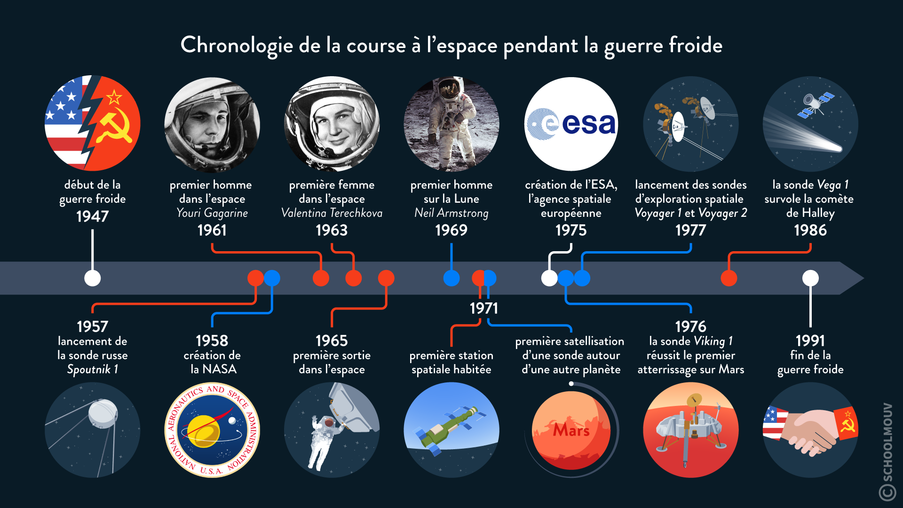

Résumé du sujet
La conquête de l'espace est l'une des dimensions les plus fascinantes de la Guerre froide. Les États-Unis et l'Union soviétique ont rivalisé pour atteindre des exploits spatiaux sans précédent, démontrant leur puissance technologique et idéologique. Cette course a débuté à la fin des années 1950 et s'est poursuivie jusqu'à la fin de la guerre froide, aboutissant à des réalisations historiques telles que le lancement du satellite Spoutnik, les premiers vols habités et l'alunissage d'Apollo 11.
Principales Réalisations de la Conquête Spatiale
| Événement | Date | Pays | Description |
|---|---|---|---|
| Lancement de Spoutnik 1 | 4 octobre 1957 | Union Soviétique | Premier satellite artificiel en orbite autour de la Terre. |
| Lancement de Explorer 1 | 1 février 1958 | États-Unis | Premier satellite artificiel lancé par les États-Unis. |
| Premier vol spatial habité (Vostok 1) | 12 avril 1961 | Union Soviétique | Youri Gagarine est le premier humain dans l'espace. |
| Mercury-Redstone 3 (Freedom 7) | 5 mai 1961 | États-Unis | Premier vol spatial habité américain (Alan Shepard). |
| Mission Apollo 11 | 20 juillet 1969 | États-Unis | Premier alunissage habité (Neil Armstrong et Buzz Aldrin). |
| Atterrissage de Venera 7 | 15 décembre 1970 | Union Soviétique | Première sonde à atterrir sur Vénus et à transmettre des données. |